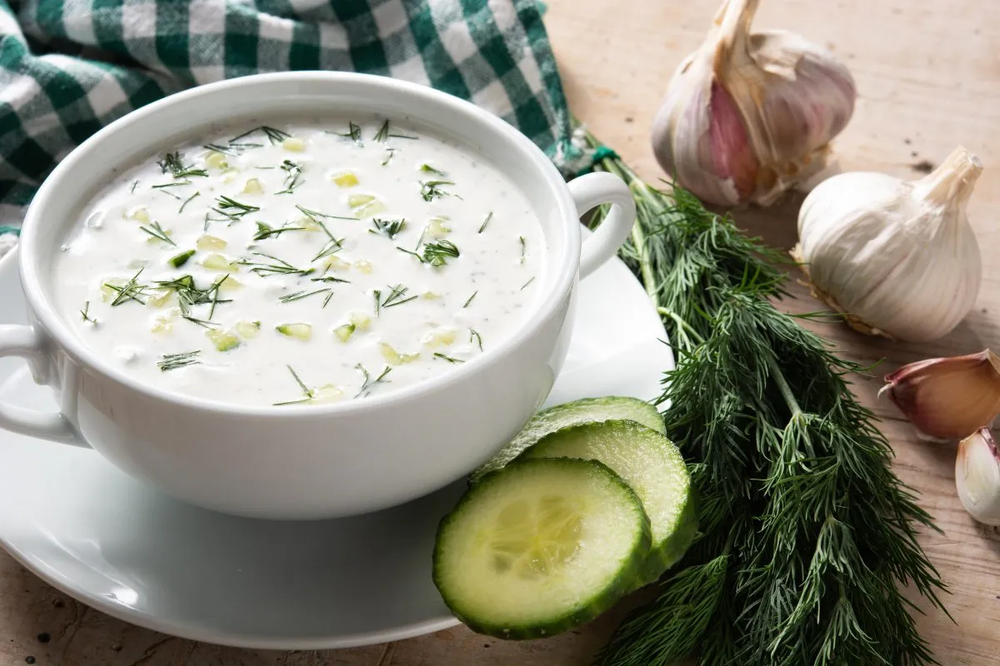

ბელგიური სამზარეულო (ფრანგ. Cuisine belge, ნიდერლ. Belgische keuken) — ტრადიციული ბელგიური კერძების ერთობლიობა, რომელთაგან განსაკუთრებით ცნობილია შოკოლადი, ვაფლი, ფრი და ლუდი. ბელგიურზე განსაკუთრებით დიდი გავლენა აქვს ფრანგულ სამზარეულოს, რის გამოც აქ ხშირად ვხვდებით ფრანგულ კერძებსა და ინგრედიენტებს.
